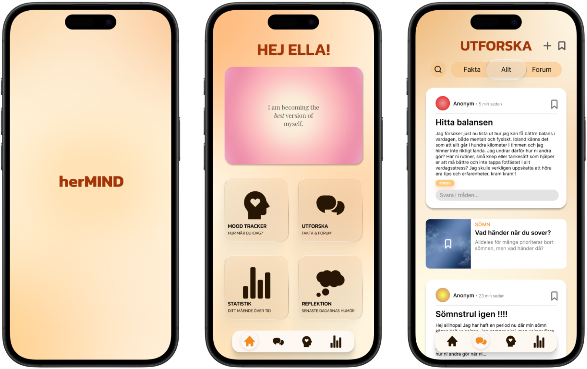

2026
herMIND
A project within the course Participatory Design, based on the UN Sustainable Development Goals. As a group, we chose to focus on 3.4 (Ensure healthy lives and promote well-being for all at all ages) and 5.6 (Ensure universal access to sexual and reproductive health).
Together with a participant group consisting of young women, we identified a clear lack of reliable and collected information about women’s mental health in a digital environment filled with uncertain information and paywalls. Together with the participants, we explored the need for a digital solution that is not based on the menstrual cycle, making it more inclusive for women who use contraceptives.
Through a series of workshops and prototype tests, we developed the app prototype herMIND. The app combines science-based information with a mood tracker, statistics and a safe forum for sharing experiences. It was designed with a warm color palette to create a feeling of safety and comfort. The result was a concrete and interactive prototype that addresses an identified gap in the market without commercial barriers.
The project also highlights the design decisions and trade-offs that can occur in participatory design when the user's wishes need to be balanced with the long-term usability of the system.
